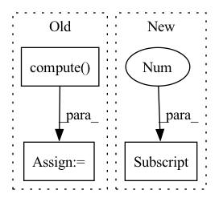

Pattern ID :3970
Before Change
gt_features[pattern_idx].view(pat_len, -1))
// find optimal order assignment, see https://pypi.org/project/munkres/1.0.9/
indexes = assignment_solver.compute( dist_matrix)
if len(indexes) != pat_len:
raise RuntimeError("ComposedPatternLoss::Error:: Failed to match panel order" )
// Gather the GT in requested orderAfter Change
for _ in range(pat_len): // this many pair to arrange
to_match_idx = dist_matrix.argmin() // current global min is also a best match for the pair it"s calculated for!
row = to_match_idx // dist_matrix.shape[0]
col = to_match_idx % dist_matrix.shape[0]
match[row] = col
// exlude distances with matches
dist_matrix[row, :] = float("inf")In pattern: SUPERPATTERN
Frequency: 3
Non-data size: 3
Instances Fragment ID: 14915547
Project Name: maria-korosteleva/garment-pattern-estimation
Commit Name: add80fdb1a7bf2a60b8df4571ba0c675783176d0
Time: 2021-06-09
Author: mariako@kaist.ac.kr
File Name: nn/metrics.py
M Class Name: ComposedPatternLoss
N Class Name: ComposedPatternLoss
M Method Name: _panel_order_match(3)
N Method Name: _panel_order_match(3)
M Parent Class:
N Parent Class:
M File Name: nn/metrics.py
N File Name: nn/metrics.py
M Start Line: 860
M End Line: 881
N Start Line: 865
N End Line: 887
Before Change
qc_op.set_encodings(encodings)
qc_op.set_mode(OpMode.quantize_dequantize)
output = qc_op.compute( input_arr)
print(output)
assert np.max(output) <= 1.1
assert np.min(output) >= -5After Change
qc_op.encodings = encodings
qc_op.op_mode = OpMode.quantizeDequantize
output = session.run(None, {"input": input_arr})[0]
assert np.max(output) <= 1.1
assert np.min(output) >= -5
Fragment ID: 14915546
Project Name: quic/aimet
Commit Name: 3a2f2b8c3b1ae97c2afc811baef69df06342018d
Time: 2023-02-17
Author: quic_mtuttle@quicinc.com
File Name: TrainingExtensions/onnx/test/python/test_qc_quantize_op.py
M Class Name: TestQcQuantizeOp
N Class Name: TestQcQuantizeOp
M Method Name: test_quantize_dequantize_with_pymo(1)
N Method Name: test_quantize_dequantize_with_pymo(1)
M Parent Class:
N Parent Class:
M File Name: TrainingExtensions/onnx/test/python/test_qc_quantize_op.py
N File Name: TrainingExtensions/onnx/test/python/test_qc_quantize_op.py
M Start Line: 60
M End Line: 74
N Start Line: 121
N End Line: 144
Before Change
qc_op.set_encodings(encodings)
qc_op.set_mode(OpMode.quantize_dequantize)
output_qdq = qc_op.compute( input_arr)
assert np.allclose(output_oneshot, output_qdq)
def test_one_shot_quantize_dequantize_symmetric_signed_cpu(self):After Change
use_symmetric_encodings=False,
use_cuda=False)
output_oneshot = session.run(None, {"input": input_arr})[0]
encodings = libpymo.TfEncoding()
encodings.bw = 8
encodings.max = 2.5 Fragment ID: 14915545
Project Name: quic/aimet
Commit Name: 3a2f2b8c3b1ae97c2afc811baef69df06342018d
Time: 2023-02-17
Author: quic_mtuttle@quicinc.com
File Name: TrainingExtensions/onnx/test/python/test_qc_quantize_op.py
M Class Name: TestQcQuantizeOp
N Class Name: TestQcQuantizeOp
M Method Name: test_one_shot_quantize_dequantize_asymmetric_cpu(1)
N Method Name: test_one_shot_quantize_dequantize_asymmetric_cpu(1)
M Parent Class:
N Parent Class:
M File Name: TrainingExtensions/onnx/test/python/test_qc_quantize_op.py
N File Name: TrainingExtensions/onnx/test/python/test_qc_quantize_op.py
M Start Line: 80
M End Line: 94
N Start Line: 210
N End Line: 236